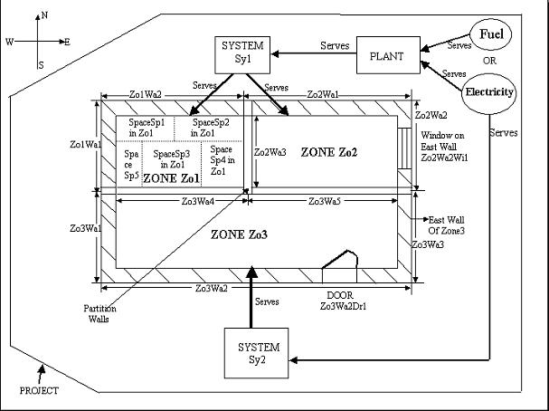
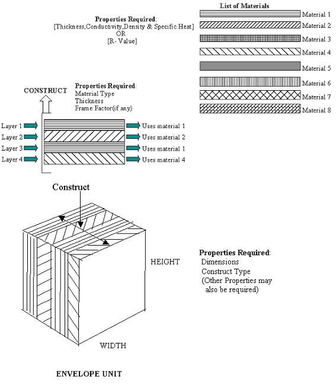
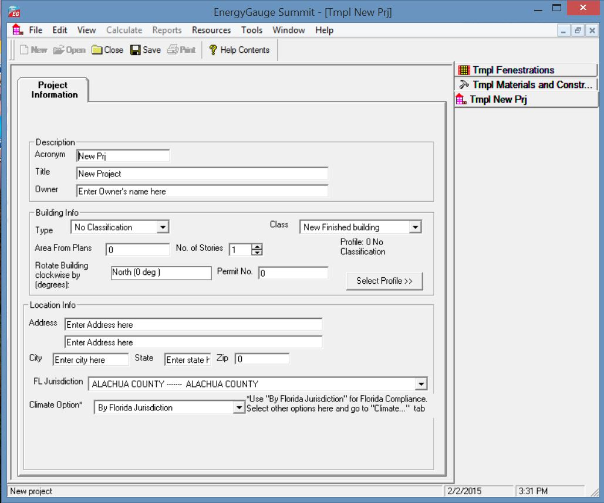
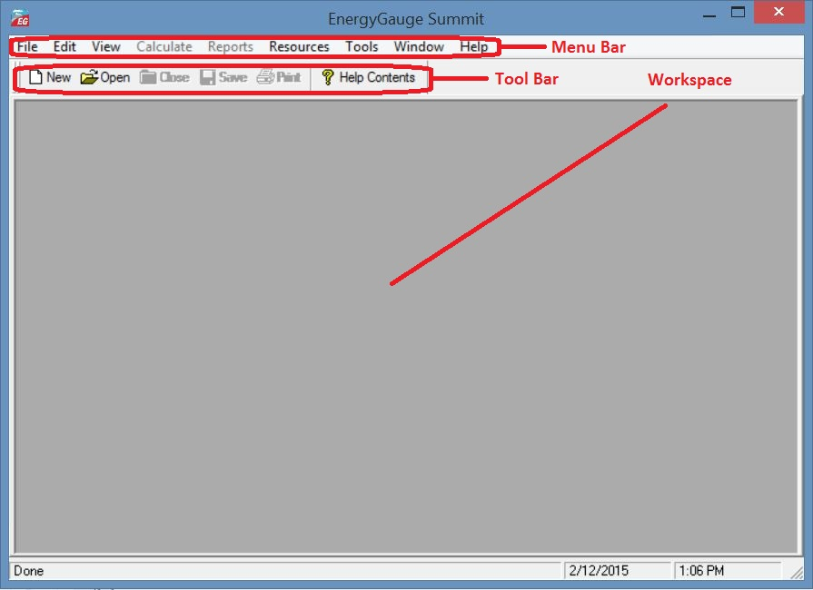

Introduction
|
Introduction |
Project Hierarchy
A fundamental concept in EnergyGauge Summit is that it structures the building into a hierarchical collection of elements. For example, a building (sometimes referred to as Project) consists of multiple Zones which in turn may contain many Spaces, Walls, Floors, Roofs etc. Walls can further contain multiple Windows and Doors. The figure demonstrates the concept.

In the illustration, the Project is composed of the building, systems and the plant.
The project has a PLANT, that may include chillers and/or boilers that are served by the utility and/or other fuel sources.
The project has two systems, Sy1 and Sy2
System Sy1 is served by the PLANT
System Sy2 is a packaged system type that is served directly by the utility.
The building consists of three zones: Zo1; Zo2; and Zo3. (A Zone is a unit of a building in which the air is assumed to be well mixed and where the temperature can be assumed to be uniform)
System Sy1 serves the following Zones: Zo1 and Zo2
System Sy2 serves only Zone Zo3
Zone Zo1 consists of five spaces of various sizes: Sp1; Sp2; Sp3; Sp4; and Sp5. The sum of the areas and volumes of the five spaces constitute the area and volume of Zo1. (A space is a portion of a Zone having a distinct internal load characteristic, such as Lighting and Equipment loads)
Zone Zo1 has two exterior walls: Zo1Wa1 (west) and Zo1Wa2 (north).
Zone Zo2 has two exterior walls: Zo2Wa1 (north) and Zo2Wa2 (East), and a partition wall Zo2Wa3 that is next to Zone Zo1.
The east wall Zo2Wa2 in zone Zo2 contains a window Zo2Wa2Wi1. The orientation of windows need not be specified. It is inherited from the wall on which it is mounted.
Zone Zo3 has three exterior walls namely Zo3Wa1 (west), Zo3Wa2 (south), and Zo3Wa3 (east).
Zone Zo3 has two partition walls: Zo3Wa4 which is next to Zone Zo1 and another Zo3Wa5 that is next to zone Zo2.
The south wall Zo3Wa2 in zone Zo3 contains a door Zo3Wa2Dr1. The orientation of door need not be specified. It is inherited from the wall on which it is mounted.
Materials and Constructs - Introductory Concepts
Unlike prior DOS versions of Summit where choices for construct (or envelope types) were mostly limited to prebuilt Wall or Roof types, EnergyGauge Summit gives the user virtually unlimited choices. First, the software provides the user with an extensive list of constructs for walls, roofs and floors. Second, the user has the option of creating their own constructs and using them repeatedly. Therefore an understanding of the basics behind constructs is crucial in being able to use the software effectively.

A building may contain several envelope units such as walls, roofs and floors.
Each envelope unit has associated dimensions (such as width and height) and a construct.
The construct specifies the physical make up of the envelope unit.
More than one envelope unit can have the same construct. Therefore, once a construct is developed or included in a project, it can be used to specify the make up of several envelope units.
A construct consists of one or more layers that make up the construct, except for a simple construct where layers do not exist and gross properties of the construct are used in the calculations
Each layer is a slice of the construct that has distinct characteristics that include the material it is made of, thickness and framing factor (if any).
The aggregate of each property of the layers constitutes the overall property of the construct. For example, the sum of the thickness of the layers is the total thickness of the construct.
Each layer must be associated with a material that must exist prior to building a construct.
A material has specific detailed thermal properties such as conductivity, density, specific heat and thickness. Alternatively, in lieu of these properties one can specify only the R-Value in which case the material is assumed to be massless.
For details on how to build constructs, see the section on Project Materials and Constructs
Project
What is a project?
A project is your building input containing components such as zones, walls etc. When saved, the file has an extension .egc
Create a new project?
You can open a project using the 'New' tool button or from the 'File' > 'New' menu.
Open an existing project?
You can open a project using the 'Open' tool button or from the 'File' > 'Open' menu.
Templates
What is a template?
A template is a file with preset information that can be used as a starting point for a new project. Templates contain preset project and resource information such as constructs, materials and fenestrations. Users may create and save as many templates as they need, and choose any template to create a new Project. Creating new projects from templates can save considerable time, especially if constructs, materials and fenestrations that are often used are saved in a template for repeated use. In addition, the user can also set the default fenestrations envelope constructs.
Create a template?
From the main menu, Click 'File' > 'New' >'Template'. Make your modifications and save it.
Modify an existing template?
Click 'Open'. Then select a template (a file with .EGT extension) from the open dialog. Make your modifications and save it.
Create a new project using templates?
1. A template file must first exist. If not, create one. Or use the sample template provided with the software.
2. Click 'File' > 'New' > 'Project from Template'.
3. Select a template (a file with .EGT extension) from the open dialog.
4. This creates a new project based on the selected template.
How do I know if I have opened a template or a project file?
A Project will have a Project Explorer (tree). A template does not have an explorer (tree). In addition, the form layout will be significantly different for each. See the figure below for an example of a template layout.

To modify Fenestrations in the template click 'Tmpl Fenestrations' button located on the right. Make your modifications. An alternate access is through the main menu. Click 'Edit' > 'Template Fenestrations'.
To modify Materials and Constructs in the template click 'Tmpl Materials and Constructs' button located on the right. Make your modifications. See the section onMaterials and Constructs Library for editing functions. An alternate access is through the main menu. Click 'Edit' > 'Template Materials and Constructs'.
To set or modify preferences, in the main menu click 'Edit' > 'Template Preferences'. and make your modifications.
Master Library
What is the Master Library?
The Master Library contains extensive resources on materials, fenestration and constructs. It serves as a repository from which you can draw into your individual project or template. Users cannot change information contained in the master library.
Accessing the Master Library
From the main menu, click 'Resources' --> 'Master Library' . Then click the library component you want to open.
Note: The Master Library can be accessed even if a project is not open.
Project Library
What is a Project Library?
The project library is similar to the master library but unlike the Master Library is associated with a specific project and provides resources for the project. Each project has its own project library. Project Libraries may be edited.
Accessing the Project Library
First, a project must be open. You can access the Project Library by selecting the "Prj Resources" tab of the project explorer and then clicking the library button you want access. Alternatively, you can access it from the main menu. To do this from the main menu click 'Edit' . Then click the project library component you want to open.
Note: The project library can be accessed only if a project is open.
Miscellaneous
Some fields may be inactive, why?
Some fields are intentionally kept inactive or not editable. They usually represent the defaults used in calculations and are not user-editable.
What are tool tips? How do I get tool tips displayed?
In general, if you hover the mouse on any (non grid) field on any form, a tool tip appears giving more information about that field, such as data ranges and units.
What are the units of the various data?
Units are not written on the forms. Use the tool tip feature above to check input units.
Important note:
You must tab out of the field you are editing (or move to another field and click the mouse) before the change will take effect. If you switch screens or choose to calculate or save without first moving to another field, the change will not be saved or included in the calculation.
General Layout
Upon starting EnergyGauge Summit, the following window comes up.

To create a new project click the 'New' tool button.
To open and work on an existing project, click the 'Open' tool button.
You can also open an existing or new project from the 'File' menu.
If you require help, click on the 'Help Contents' button or use the 'Help' from the main menu.